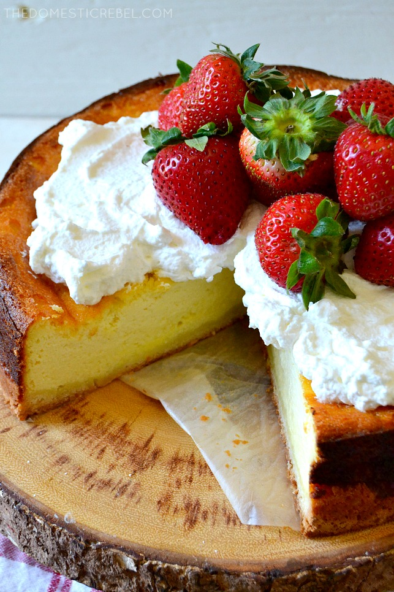

German Cheesecake (Käsekuchen)

Description
An authenic German cheesecake that is very light and fluffy in comparison to its American counterpart.
Recipe Credits
Ingredients
- 3/4 cup + 2 Tbsp (200g) salted butter softened slightly
- 1 cup (225 g) granulated sugar
- 6 eggs
- 1 cup (225 g) all-purpose flour
- 4 cups quark (a German cheese - if you cannot find quark, use whole-milk ricotta)
- 1 pkg vanilla sugar (.32 oz or 9g)
- 2 tsp vanille extract
- 1 Tbsp lemon juice
- 1 pkg vanilla pudding powder (1.5 oz or 43g)
- Fresh whipped cream and berries for garnish, optional but recommended
Instructions
- Preheat oven to 350 degrees F. Lightly grease the bottom of a 9" round springform pan. Add in a parchment round, then liberally grease the parchment round and sides of pan.
- For the crust: In a medium bowl, combine 2/3 cup butter, 1/3 cup granulated sugar, 1 egg and the flour with a spoon until combined. Press into the bottom of the pan and lightly up the sides of the pan.
- For the cheesecake filling: In the bowl of a stand mixer, cream together remaining butter and the remaining granulated sugar
with the paddle attachment until creamy, about 1 minute. Separate the eggs - one bowl of whites, and one bowl of egg yolks, and add in the egg yolks to the cheesecake batter one at a time, beating well after each addition.
Add in the quark or ricotta. Beat in the vanilla sugar, vanilla extract, and lemon juice, followed by the vanilla pudding powder. Set aside briefly.
- In another stand mixer bowl, beat the egg whites until stiffened, about 5-7 minutes. Fold the stiff egg whites into the cheesecake batter until fully incorporated.
Pour the cheesecake batter into the prepared pan and smooth out the top.
- Bake for approximately 1 hour, then turn off the oven and crack the door, leaving the cheesecake in the oven for 10 minutes. Gently remove the cheesecake and allow to come to room temperature before
refrigerating for at least 2 hours to set and chill. Serve with whipped cream and berries, if desired.
Back to Home Page